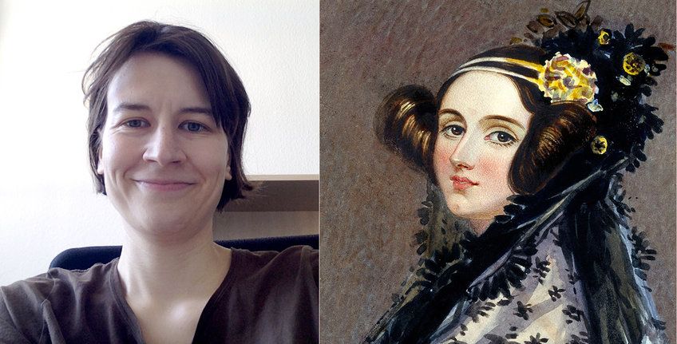
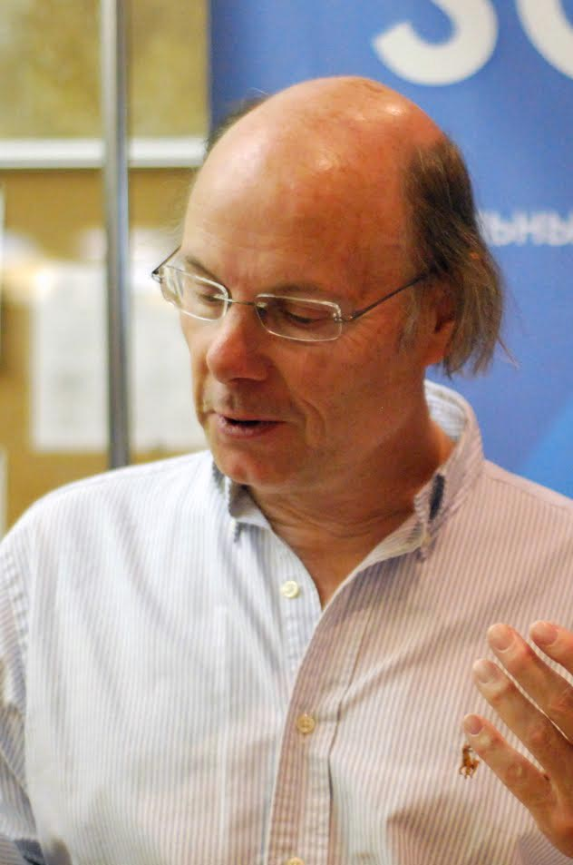
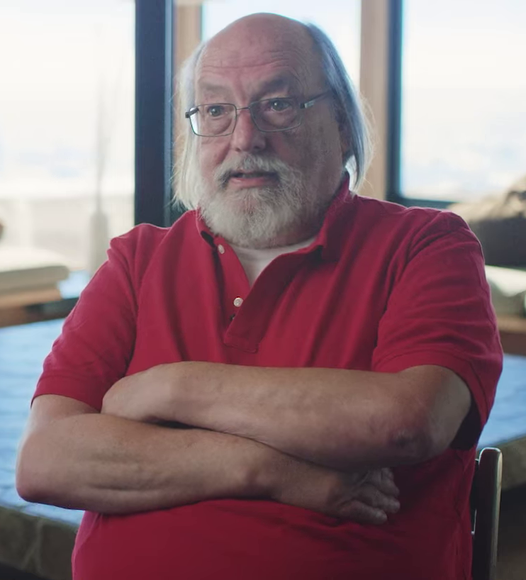
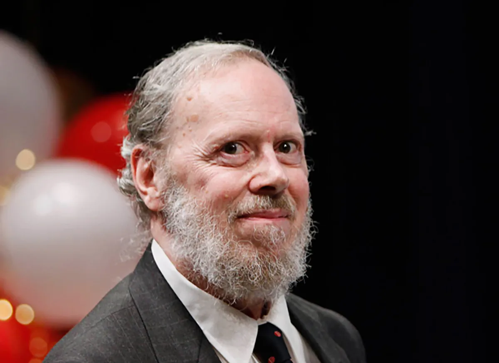

Ada Lovelace
Augusta Ada King, Countess of Lovelace was an English mathematician and writer, chiefly known for her work on Charles Babbage's proposed mechanical general-purpose computer, the Analytical Engine. She was the first to recognise that the machine had applications beyond pure calculation.

Bjarne Stroustrup
Bjarne Stroustrup is a computer scientist, most notable for the invention and development of the C++ programming language. Stroustrup served as a visiting professor of computer science at Columbia University in the City of New York beginning in 2014, where he has been a full professor since 2022.
Anders Hejlsberg
Anders Hejlsberg is a Danish software engineer who co-designed several programming languages and development tools. He was the original author of Turbo Pascal and the chief architect of Delphi. He currently works for Microsoft as the lead architect of C# and core developer on TypeScript.

Guido van Rossum
Guido van Rossum is a Dutch programmer best known as the creator of the Python programming language, for which he was the "benevolent dictator for life" until he stepped down from the position on 12 July 2018.
Tim Berners-Lee
Sir Timothy John Berners-Lee OM KBE FRS FREng FRSA DFBCS RDI, also known as TimBL, is an English computer scientist best known as the inventor of the World Wide Web, the HTML markup language, the URL system, and HTTP.

Ken Thompson
Kenneth Lane Thompson is an American pioneer of computer science. Thompson worked at Bell Labs for most of his career where he designed and implemented the original Unix operating system.
James Gosling
James Gosling OC is a Canadian computer scientist, best known as the founder and lead designer behind the Java programming language.

Donald Knuth
Donald Ervin Knuth is an American computer scientist, mathematician, and professor emeritus at Stanford University. He is the 1974 recipient of the ACM Turing Award, informally considered the Nobel Prize of computer science. Knuth has been called the "father of the analysis of algorithms".

Bill Gates
William Henry Gates III is an American business magnate, investor, philanthropist, and writer best known for co-founding the software giant Microsoft, along with his childhood friend Paul Allen.
Brian Kernighan
Brian Wilson Kernighan is a Canadian computer scientist. He worked at Bell Labs and contributed to the development of Unix alongside Unix creators Ken Thompson and Dennis Ritchie. Kernighan's name became widely known through co-authorship of the first book on the C programming language with Dennis Ritchie..

Linus Torvalds
Linus Benedict Torvalds is a Finnish-American software engineer who is the creator and lead developer of the Linux kernel, used by Linux distributions like Debian, Arch and Android. He also created the distributed version control system Git.

Dennis Ritchie
Dennis MacAlistair Ritchie was an American computer scientist. He is best known for creating the C programming language and, with long-time colleague Ken Thompson, the Unix operating system and B programming language.


{kind=link}
{kind=link}
{kind=link}
{kind=link}
{kind=link}
{kind=link}
{kind=link}
{kind=link}